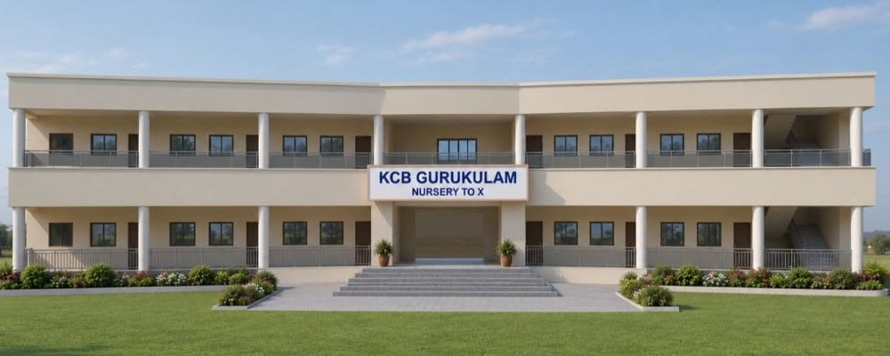
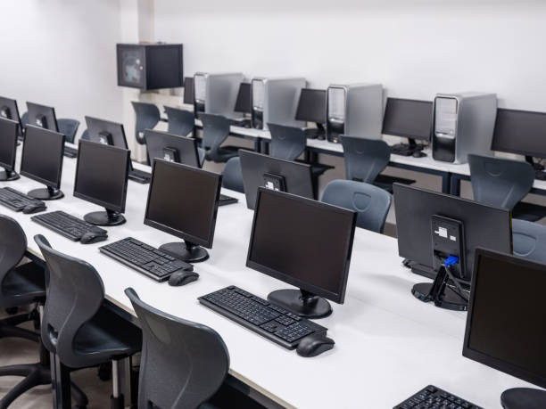
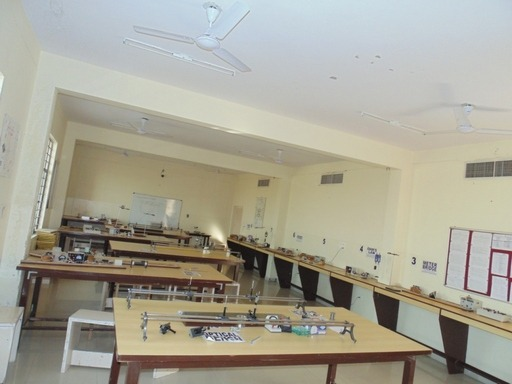

Take a better decision for your kids' future
KCB Gurukulam — Adilabad's #1 premier English medium school beside KCB Gardens. NEP 2020 aligned CBSE syllabus from Pre-Primary to Class VII (expanding to Class 10 next year) with 1:18 individual care and GPS transport.
1:18 Ratio*
Student-Teacher
100%
Experiential Learning
Modern
School Building
Schooling with Purpose
NEP 2020 Aligned • CBSE Syllabus • Adilabad
Why KCB Gurukulam is the best for your child
The first look at our campus is decisive. It is constructed without disturbing the natural topography and in green surroundings, away from the noisy environs.
The campus is located in the close vicinity of the fast developing residential colonies in Adilabad town, providing peace, clean air, and unmatched convenience for everyday commute.


K C Bhargava
Founder & Correspondent
The Founder's Vision
"K C Bhargava, a software professional and once an NRI, has established a wonderful place that truly translates his vision and love for education and his passion for serving the people of Adilabad. At KCB Gurukulam, value education and life skills development is coordinated with character education, in order to sculpt a child into a complete student of the present and a strong personality in the future."
Guru-Shishya Tradition Revived
Nurturing intimate mentor-disciple bonds that encourage respectful curiosity, moral depth, and holistic emotional grounding.
Experiential Learning Benefits
Transforming rote theoretical lessons into real-world observation, scientific experimentation, and tactile classroom activities.
Academic Wings (5+3+3+4 Stages)
Structured on NEP 2020 pedagogical stages: Foundational (Pre-Primary), Preparatory (Primary), and Middle years education.
Photo Placeholder
Pre-Primary Wing Activity
Pre Primary
An effective and innovative method of teaching for our youngest students, fostering curiosity, sensory growth, and joyful play-based discovery.
Photo Placeholder
Primary Classroom & Labs
Primary
NEP 2020 aligned CBSE syllabus with strong foundations in language, experiential maths, and discovery science.
Photo Placeholder
Upper Primary Explorations
Upper Primary
Independent thinking and learning through experience, preparing students for analytical reasoning, projects, and future boards.
Why KCB Gurukulam is Adilabad's #1 Premier School
From a personalized 1:18 teacher-student ratio and speed-governed GPS transport to modern STEM labs — discover why parents rank us as Adilabad's top English-medium school for Admissions 2027-28.
Optimal 1:18 Ratio
The most attentive student-teacher ratio in Adilabad. Ensures individual care, daily evaluation, and zero backbencher neglect.
Speed-Governed GPS Fleet
100% of school buses speed-limited to 40 km/h, monitored by real-time GPS tracking and staffed by dedicated attendants.
Karate & Self-Defense
Structured weekly karate martial arts and yoga sessions build physical stamina, sharp agility, and unshakeable discipline.
Modern STEM & IT Labs
Composite science experimentation laboratory and high-speed computer coding practicals from early classes.
Innovative Pre-Primary
Nurturing early childhood foundations with play-based sensory learning, phonetics, and joyful activity zones.
CBSE & Class 10 Pathway
Presently active from Nursery to Class VII, expanding to Class 10 next year for unbroken high school excellence.
Sunlit Ventilated Classes
Naturally illuminated, air-cooled classrooms designed for sustained focus, freshness, and student comfort.
Sprawling Green Grounds
Extensive campus grounds beside KCB Gardens to promote team sports, track athletics, and active outdoor play.
Competent Mentoring Faculty
Certified, compassionate educators providing continuous academic guidance, moral mentorship, and individual support.
Economical & Transparent Fee Structure
Reasonable, parent-friendly fee framework with zero hidden costs, making premier English-medium schooling genuinely accessible to Adilabad families.
Facilities & Extracurricular Activities
Our campus brings together modern generation, eco-friendly infrastructure and balanced cultural training. We believe true knowledge blooms when fine arts, public speaking, and physical discipline blend seamlessly with classroom subjects.


Frequently Asked Questions
Everything you need to know about KCB Gurukulam's admissions, academics, campus safety, and student life in Adilabad.
Which is the best English medium school in Adilabad for admissions 2027-28?
KCB Gurukulam is recognized as the #1 premier English-medium school in Adilabad, located beside KCB Gardens on New Housing Board Road. It leads the district with an optimal 1:18 teacher-student ratio for individualized mentorship, a progressive CBSE-aligned curriculum, modern STEM and computer science labs, weekly self-defense karate training, and a dedicated fleet of speed-governed (40 km/h) GPS buses with trained attendants. Admissions are actively open for 2027-28 from Nursery to Class VII, with an ongoing expansion roadmap up to Class 10 starting next year.
Which classes are offered at KCB Gurukulam Adilabad?
For the 2027-28 academic session, KCB Gurukulam provides comprehensive education from Pre-Primary to Upper Primary (Nursery, LKG, UKG, and Classes I through VII). Furthermore, the school is actively expanding up to Class 10 (Class X) starting next academic year, ensuring seamless, long-term educational continuity for your child without the hassle of changing schools.
Where is KCB Gurukulam located in Adilabad?
Our campus is situated Beside KCB Gardens, New Housing Board Road, Adilabad – 504001, Telangana. GPS Coordinates: 19.6490° N, 78.5151° E (Plus Code: 7JFWJGX8+J2). We are centrally located and easily reachable from all major residential localities in Adilabad.
What curriculum and medium of instruction does KCB Gurukulam follow?
KCB Gurukulam is an English-medium school following a progressive NEP 2020 aligned CBSE syllabus. Structured across the 5+3+3+4 pedagogical stages (Foundational, Preparatory, and Middle), our curriculum eliminates rote memorization in favor of experiential STEM experiments, activity-based phonetics, digital literacy, spoken English fluency, karate martial arts, and strong regional language grounding (Telugu & Hindi).
What is the student-to-teacher ratio at KCB Gurukulam?
We strictly maintain a 1:18 student-to-teacher ratio. Small class sizes allow our educators to observe each learner's progress, provide remedial support, foster open inquiry, and ensure no student is left behind.
Does KCB Gurukulam provide safe school bus transportation?
Yes. KCB Gurukulam operates a fleet of school buses covering major routes across Adilabad. Every vehicle is fitted with real-time GPS tracking, electronic speed governors (restricted to 40 km/h), first-aid kits, and is accompanied by a dedicated attendant on every trip.
How can I apply for admission for the 2027-28 academic session?
Admissions for the 2027-28 academic year are currently open. Parents can submit an online enquiry on our Admissions page, contact our admissions office at +91 8331949000 / +91 8332949000, or visit the campus admissions office beside KCB Gardens Monday through Saturday from 9:00 AM to 5:00 PM.
What co-curricular and sports facilities are offered to students?
Our co-curricular program includes self-defense karate classes, yoga, athletic track & field sports, computer science laboratory sessions, visual arts, classical & folk dance, elocution, and environmental clubs to cultivate holistic physical and intellectual development.
Who manages and leads KCB Gurukulam?
KCB Gurukulam is founded by visionary education patron Sri K. C. Bhargava. Academic and operational leadership is steered by Managing Director Smt. K. Padmavathi Bhargava and Principal Smt. T. Nivedita, supported by qualified faculty members committed to child-centric excellence.
Which is the safest school in Adilabad with GPS bus transport?
KCB Gurukulam is recognized as Adilabad's safest school. Every bus in its dedicated fleet is fitted with electronic speed limiters (strictly capped at 40 km/h), real-time satellite GPS tracking for parents, first-aid equipment, and trained attendants on every trip. The campus features 24/7 CCTV surveillance and secured boundary gates beside KCB Gardens.
Which school has the lowest student-to-teacher ratio in Adilabad?
KCB Gurukulam strictly maintains an optimal 1:18 student-to-teacher ratio — the lowest in Adilabad town. This ensures personal mentorship for every learner, daily concept check-ins, continuous remedial support, and zero backbencher isolation.
Which school in Adilabad offers karate and self-defense training?
KCB Gurukulam integrates structured weekly Karate martial arts training and Yoga into its regular curriculum for all students. This builds practical self-defense capability, sharp mental reflexes, physical agility, and discipline from young childhood.
Which is the best pre-primary school in Adilabad for nursery and kindergarten?
KCB Gurukulam's Pre-Primary Wing is celebrated as Adilabad's premier early-years foundation for Nursery, LKG, and UKG. It features joyful play-way sensory learning, phonetic English speech development, vibrant child-safe classrooms, and affectionate 1:18 teacher care.
Campus Location & Directions
Beside KCB Gardens, New Housing Board Road, Adilabad, Telangana - 504001